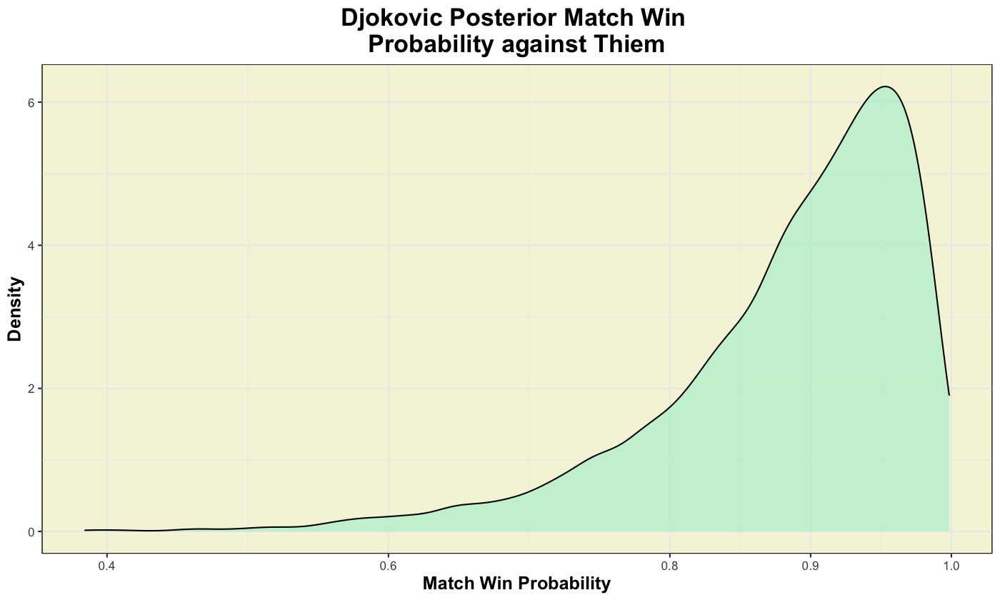
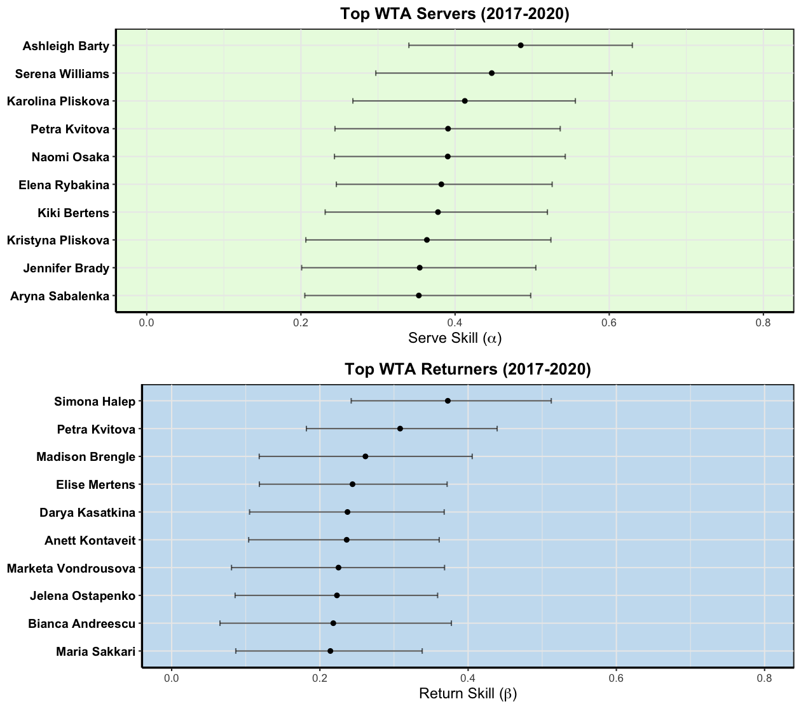
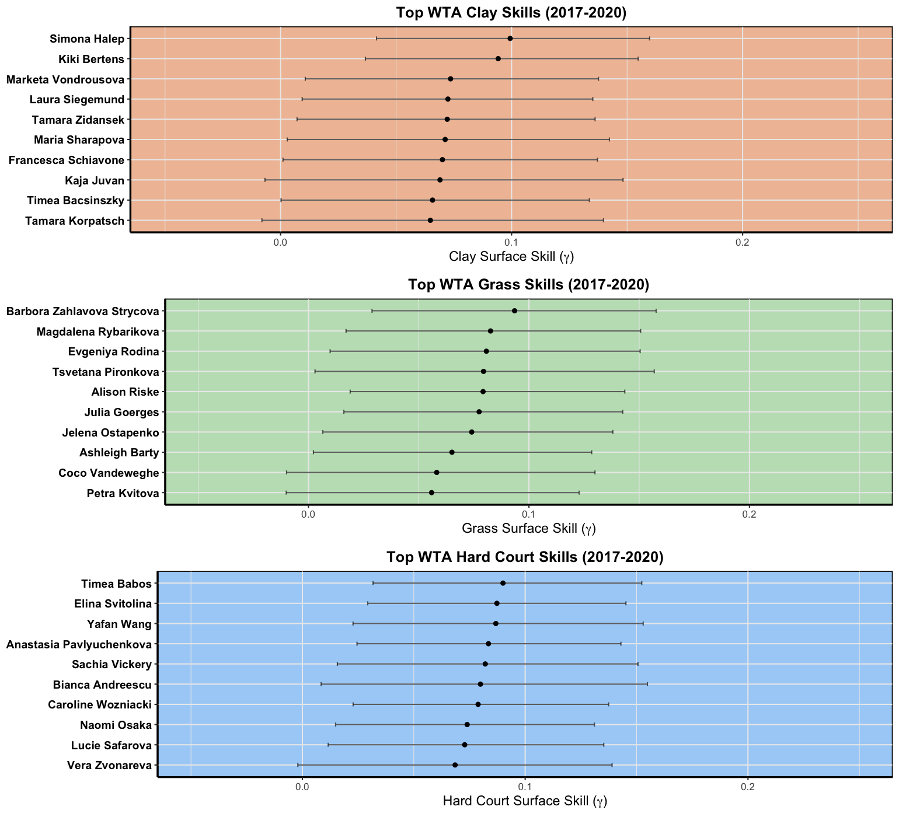
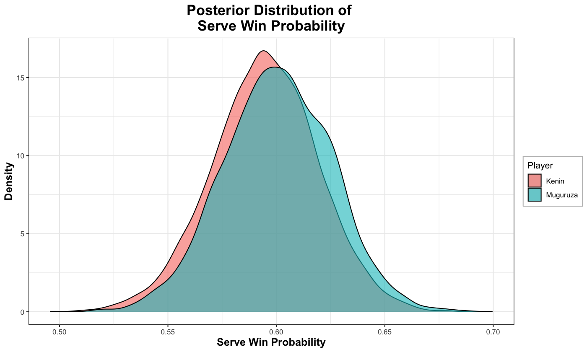
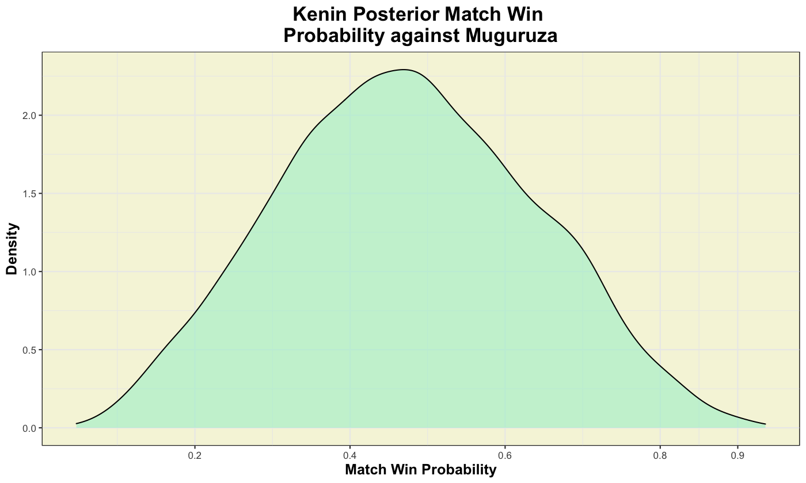
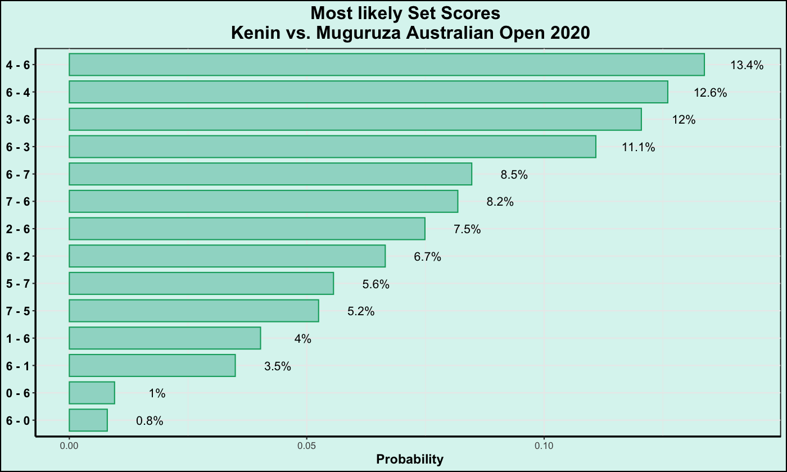

Bayesian Hierarchical Models in Tennis
 Photo by Renith R on Unsplash
Photo by Renith R on Unsplash
Point-Based Models
Point-Based models are very cool models applied in tennis that can provide us with exciting and competitive insights into the game. With them, we can answer intriguing questions like: Which player is favoured to win in a match-up? How unlikely is an observed upset?
In constructing point-based models, assumptions are first made on service point outcomes: the main one being that service points are independent and identically distributed (I.I.D.) for an entire match. This amounts to saying that all service points in a match are played equally. If we (skeptically) believe that this I.I.D. assumption is true, then it is possible to make some interesting predictions on any legit tennis match. Newton and Keller (2005)} showed with combinatorics and geometric series representations, that by simply knowing both players’ serve win probabilities we can then calculate the probabilities of either player winning the tennis match and of observing specific set scores. The diffulty now, then, is obtaining reliable estimates of player serve win probabilities prior to a match.
Since serve outcome data are collected repeatedly for tennis players following each match played, we know that serve data are not truly independent. Ideally, we should account for player variation since the serves observed from one player will be temporally pseudoreplicated! This whole setup seems to be ripe for a hierarchical model application, where each player is considered as a separate hierarchical level.
Ingram (2019) proposes a Bayesian Hierarchical Model to provide posterior serve win probabilities for players in a head-to-head (singles) matchup. This Bayesian model accounts for player serve and return skills fluctuating across different periods using a Gaussian random walk, as well as player-specific court preferences and the tournament at which the match is being played.
For this post, I present some interesting visualizations produced from fitting this Bayesian point-based model. Tennis data curated from 2018 to 2020 (until the end of the Australian Open) from one of Jeff Sackmann’s repositories, was used to feed the model. While all necessary code to fit the model is already available on the author’s GitHub page, I’ve instead fit the model in R (whereas the author uses Python). Bayesian posterior samples were drawn using rstan, a package that uses a Hamiltonian Monte Carlo algorithm.
Who are the top skilled ATP Players?
From the posterior distribution of player serve and return skills, I’ve ranked the top 10 players for each skill based on the players’ posterior median. Below are plots representing the top 10 ATP players for serve and return skills (dots represent posterior medians, while bands represent a 90% credible interval).

In general, players will have higher serve skills than return skills since it is easier for players to win points on their serve compared to their return against the opponent’s serve. One surreal feature shown here is that Novak Djokovic’s posterior median return skill is larger than some of the top 10 players’ serve skill!
We see that the top players with the highest serve skills sensibly adhere to who tennis fans would believe are the best servers in the game. The top ranked serve skill player, Canadian Milos Raonic, arguably has one of the most bombarding serves in history, while other notable tennis stars like Djokovic, Nadal and Federer are also ranked highly by the model.
Who are the top surface ATP Players?
Next up, we’ll look at which players get the biggest boost from the 3 tennis surfaces. The following plots should be interpreted as “additional surface skill”, which were previously unaccounted for in the players’ serve and return skill plots above.

From the clay plot, Rafael Nadal (i.e. the “King of Clay”) easily cracks the top 10 players boosted from the clay surface list, as expected with his stellar career on the clay courts. From the grass plot, we round out the other 2 kings (Fed and Djokovic) who rank particularly high on this surface. Finally, for the hard-court plot, we find other top familiar names in the ATP. Surprisingly, David Ferrer (retired 2019) was ranked 8th on our list! Here, it wouldn’t make too much sense to say that a retired player would still be ranked top 10. Perhaps this anomaly may be attributed to some deft performances on hardcourt from Ferrer before his retirement.
Djokovic vs. Thiem 2020 Australian Open
Next up, I used the model to predict the Australian Open 2020 Final match played between Djokovic and Thiem. For both these players, I first obtained their posterior serve win estimates.

From the above Posterior serve win probabilities plot, we see that Djokovic (in red) has an advantage in winning his serve games against Thiem (in blue). When considering posterior medians, we would predict that Djokovic would win just under 70% of his service games, compared to Thiem winning just under 61% of his own respective service games.
Using the posterior serve wins for both these players in the head-to-head matchup, we can then produce the posterior distribution of either playing winning the match.

From the plot above, we calculate the probability of Djokovic winning this match having \(90\%\) credible interval of [\(70.4 \%\), \(98.4 \%\)]: quite a considerable advantage for Djokovic!
With the posterior serve wins for both these players in the head-to-head matchup, we can also produce the probabilities of observing set scores in this matchup.

The most likely set score, as predicted from the model, is 6-4 and 6-3 for Djokovic.
How do these predictions stack up with what already happened? Reassuringly, Djokovic did end up beating Thiem in this match with a final score of (6-4, 4-6, 2-6, 6-3, 6-4). These observed scores complement the most likely scores we predicted, with the exception of the 2-6 set score which had a \(1.6 \%\) chance of occurring!
Who’s got the best chance of winning the remaining Slams?
Unfortunately, Wimbledon has been cancelled and there will be no crowned grass champion this year. However, with the point-based models we can instead predict who has the best chances of winning at this illustrious grand slam tournament. By calculating each players’ predicted serve win probability at Wimbledon, we get that Novak Djokovic has the highest serve win probability of any ATP player, and thus is predicted to be the most likely Wimbledon champion. Besides Djokovic, who has the best chance of winning Wimbledon? Using the model, I obtain match win probabilities for ATP players against Djokovic. Here are the top 10 players with the highest match win probabilities against Djokovic:
| Player | Win % | 90% Credible Interval |
|---|---|---|
| Rafael Nadal | 23.7 | [ 4 - 60 ] |
| Roger Federer | 20.9 | [ 4 - 56 ] |
| Milos Raonic | 7.7 | [ 1 - 29 ] |
| Roberto Bautista Agut | 5.5 | [ 0 - 30 ] |
| Stefanos Tsitsipas | 3.7 | [ 0 - 21 ] |
| Juan Martin del Potro | 2.6 | [ 0 - 23 ] |
| Matteo Berrettini | 2.6 | [ 0 - 16 ] |
| Jo-Wilfried Tsonga | 2.0 | [ 0 - 15 ] |
| Stan Wawrinka | 1.3 | [ 0 - 11 ] |
| Andrey Rublev | 0.8 | [ 0 - 11 ] |
Based on the model, Nadal has the highest probability of beating Djokovic at Wimbledon (23.7 % with 90% credible interval of [4%, 60%]), followed closely by Roger Federer (20.9 % with 90% credible interval of [4%, 56%]).
Let’s say (God forbid), that the remaining 2 grand slams are cancelled this year. Who would have the best chances of winning the remaining grand slams this season?
Starting with Roland Garros, unsurprisingly Rafael Nadal has the highest probability of winning service points at this tournament and is thus crowned another French Open title. How does the rest of the ATP stack up against Nadal at Roland Garros? I present the top ATP players with the highest win probabilities against Nadal at 2020 Roland Garros:
| Player | Win % | 90% Credible Interval |
|---|---|---|
| Novak Djokovic | 28.1 | [ 6 - 66 ] |
| Stefanos Tsitsipas | 15.5 | [ 3 - 46 ] |
| Dominic Thiem | 9.8 | [ 1 - 37 ] |
| Milos Raonic | 6.7 | [ 0 - 34 ] |
| Roger Federer | 6.4 | [ 1 - 31 ] |
| Matteo Berrettini | 4.4 | [ 0 - 23 ] |
| Andrey Rublev | 2.9 | [ 0 - 20 ] |
| Juan Martin del Potro | 2.7 | [ 0 - 21 ] |
| Alexander Zverev | 2.4 | [ 0 - 15 ] |
| Jan Lennard Struff | 1.8 | [ 0 - 13 ] |
Here, we see that Djokovic has the highest probability of beating Djokovic at Wimbledon (28.1 % with 90% credible interval of [6%, 66%]), followed by Stefanos Tsitsipas (15.5 % with 90% credible interval of [3%, 46%]). Roger Federer falls to 5th in terms of players most likely to beat Nadal at Rolland Garros (behind Thiem and Raonic).
Ending out our hypothetical scenarios with the (usual) last grand slam tournament of the season, US Open, we find that Novak Djokovic has the highest probability of winning service points at this tournament and is thus crowned the US Open chip. How does the rest of the ATP stack up against Djokovic at US Open?
| Player | Win % | 90% Credible Interval |
|---|---|---|
| Rafael Nadal | 28.3 | [ 8 - 61 ] |
| Roger Federer | 17.1 | [ 3 - 46 ] |
| Stefanos Tsitsipas | 17.1 | [ 4 - 44 ] |
| Daniil Medvedev | 10.6 | [ 2 - 35 ] |
| Milos Raonic | 9.4 | [ 2 - 30 ] |
| Dominic Thiem | 8.6 | [ 1 - 29 ] |
| Juan Martin del Potro | 8.4 | [ 1 - 38 ] |
| Andrey Rublev | 8.0 | [ 1 - 29 ] |
| Alexander Zverev | 5.7 | [ 1 - 23 ] |
| Roberto Bautista Agut | 5.6 | [ 1 - 23 ] |
Here, we see 4 ATP players with double digit probabilities of winning against Djokovic at US Open which suggests that this grand slam may be the most uncertain tournament to predict. Nadal and Federer appear to be the most likely culprits to defeat Djokovic with probabilities 28.3% and 17.1% respectively. It is very interesting to note that Milos Raonic was consistently ranked in the top 5 of players with the highest chances of winning a grand slam this season. At age 29, hopefully we will see some great things from the Canadian Ace as the season resumes!
WTA Players
Naturally, after seeing the ouput of the bayesian point-based model on ATP players, we might ask “How does this model do on WTA players?”.
Let’s find out



 
Being up-front about the assumptions
All predictive models we make are wrong. We hope to adequately capture all underlying processes, however to fit models we have to make some simplifying assumptions. The main assumption made in fitting this model was that service point outcomes are I.I.D. for an entire match (i.e. all service points in a match are played equally). Of course, we know that point outcomes in practice are not independent, nor are they identically distributed. Throughout a match, there exists momentum from game-to-game, which means that the outcome of a previous serve can influence the current serve. Furthermore, the performance of players on serve may differ depending on the pressure situation of the match. We may have reason to believe that a serve on the first service of the match compared to a serve when facing strenuous break opportunities may be drastically different. While the I.I.D. assumption in tennis does not hold, Klaassen and Magnus (2001) showed that these deviations are quite weak and thus the I.I.D. assumption may be a “good approximation” for match prediction. Furthermore, it was also assumed that player skills evolve according to a Gaussian random walk where player skills change smoothly from one period to the next with equal variance. This assumption, in general, is also not true since some players exhibit rapid increases or decreases in skill during the beginning and end of their careers. However, these deviations from our assumptions may also be weak since most players observed in the collected data are representative of established players in the prime years of their tennis career. Hence, we expect the majority of players to be playing with consistent skill levels.
Data Issues
Some of the entries in the data taken from Jeff Sackmann’s repository appear to be incomplete. Some matches indicate that 0 service points were won on 0 serve point opportunities, while other entries indicate numbers that don’t make sense under a tennis match context. In a best of 3 set match, we would expect that a player should have at the very least (4 points / game) * (6 games / set) * (2 sets / Match) = 48 serves.
Some matches may have ended prematurely (ex: from player injury), and we see some entries with service games less than 48.
Conclusion
Using a Bayesian Hierarchical Model, we can account for individual player effects by considering their court surface preferences, as well as the evolution of their serve and return skills as the season progresses. Using Stan, we obtain posterior estimates of serve, return and surface skill for each player and saw who was likely to hoist the grand slam tournaments in 2020.
Sources
Ingram, Martin. 2019. “A Point-Based Bayesian Hierarchical Model to Predict the Outcome of Tennis Matches.” Journal of Quantitative Analysis in Sports 15 (4). De Gruyter: 313–25.
Klaassen, Franc J G M, and Jan R Magnus. 2001. “Are Points in Tennis Independent and Identically Distributed? Evidence from a Dynamic Binary Panel Data Model.” Journal of the American Statistical Association 96 (454). Taylor & Francis: 500–509. http://www.tandfonline.com/doi/abs/10.1198/016214501753168217.
Newton, Paul K., and Joseph B. Keller. 2005. “Probability of Winning at Tennis I. Theory and Data.” Studies in Applied Mathematics 114 (3): 241–69.